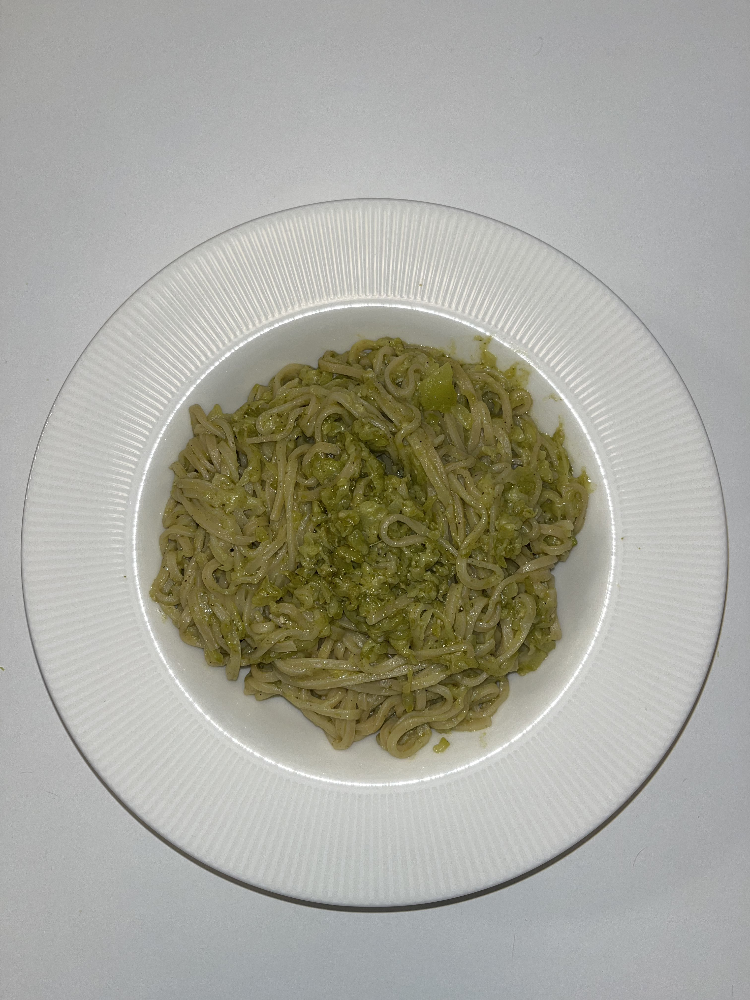

Zucchini Pesto Noodles

Ingrédients :
- Epices
- 150g de nouilles à base d'oeufs
- 1 courgette
- Pesto
- Parmigiano
- Huile d'olive
Préparation :
- On commence par la partie la plus chiante; éplucher puis râper la courgette.
- Dans une pôele, faites cuire la courgette râpée dans un filet d'huile d'olive et assaisonez-la avec du sel et du poivre, à feu moyen.
- Pendant ce temps, faites cuire vos nouilles dans de l'eau (rien de sorcier).
- Quand les filets de courgettes sont cuits, rajoutez une bonne dose de pesto puis les nouilles. Dressez puis râpez du parmesan par-dessus.
Mon avis :
C'est une recette tellement facile et tellement bonne, cool quand vous voulez toujours un repas de la flemme mais un peu plus élaboré que pâtes pesto mdr. Je n'aurais jamais cru que le mélange zucchini pesto rendrait aussi bien yet c'est une masterclass, et même au niveau de la couleur ça sa marie bien hehe.